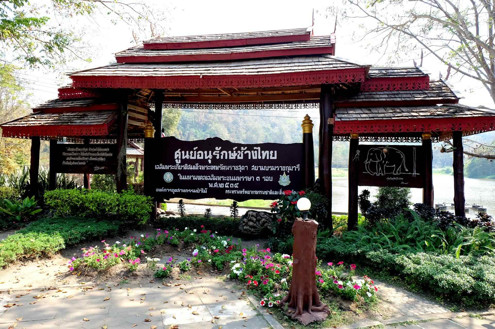
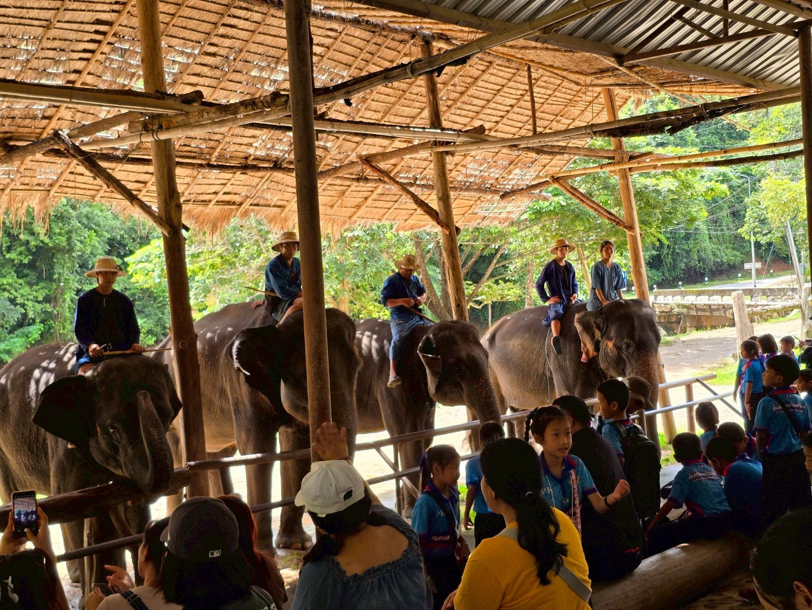
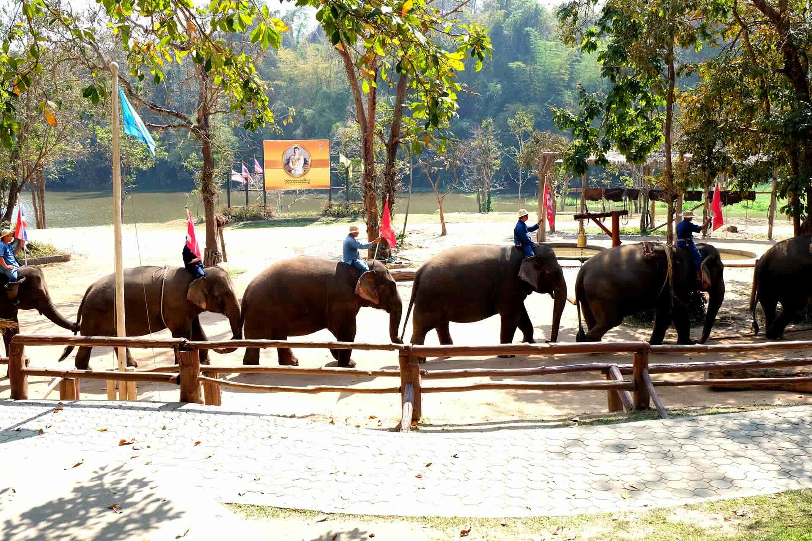

เกี่ยวกับศูนย์อนุรักษ์ช้างไทย
ศูนย์อนุรักษ์ช้างไทย (Thai Elephant Conservation Center - TECC) เป็นศูนย์อนุรักษ์ช้างไทยแห่งชาติที่ใหญ่ที่สุดในประเทศไทย ก่อตั้งขึ้นเมื่อปี พ.ศ. 2536
ศูนย์แห่งนี้มีพันธกิจในการอนุรักษ์และดูแลช้างไทย รวมถึงการศึกษาวิจัย การรักษาพยาบาล และการให้ความรู้แก่สาธารณชนเกี่ยวกับช้างไทย

🐘 กิจกรรมที่น่าสนใจ
- การแสดงของช้าง
- โรงพยาบาลช้าง
- โรงเรียนฝึกช้าง
- อาบน้ำช้าง
- ให้อาหารช้าง
- พิพิธภัณฑ์ช้าง
โปรแกรมท่องเที่ยวแนะนำ

🎭 โปรแกรมชมการแสดงช้าง
ระยะเวลา: 2–3 ชั่วโมง
ราคา: 200–300 บาท
🛁 โปรแกรมอาบน้ำช้าง
ระยะเวลา: ครึ่งวัน (4–5 ชั่วโมง)
ราคา: 1,500–2,000 บาท


ข้อมูลสำหรับผู้เยี่ยมชม
📍 ที่อยู่: อำเภอห้างฉัตร จังหวัดลำปาง
⏰ เวลาเปิด: 08:00 – 17:00 น.
💰 ค่าเข้าชม: 50 บาท
บรรยากาศศูนย์อนุรักษ์ช้างไทย


